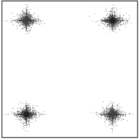

public class SBX extends java.lang.Object implements Variation

The distribution index controls the shape of the offspring distribution. Larger values for the distribution index generates offspring closer to the parents.
This operator is type-safe.
References:
| Constructor and Description |
|---|
SBX(double probability,
double distributionIndex)
Constructs a SBX operator with the specified probability and
distribution index.
|
SBX(double probability,
double distributionIndex,
boolean swap,
boolean symmetric)
Constructs a SBX operator with the specified probability and
distribution index.
|
| Modifier and Type | Method and Description |
|---|---|
static void |
evolve_asymmetric(RealVariable v1,
RealVariable v2,
double distributionIndex,
boolean swap)
Evolves the specified variables using the SBX operator using asymmetric
distributions.
|
static void |
evolve_symmetric(RealVariable v1,
RealVariable v2,
double distributionIndex,
boolean swap)
Evolves the specified variables using the SBX operator using symmetric
distributions.
|
static void |
evolve(RealVariable v1,
RealVariable v2,
double distributionIndex)
Evolves the specified variables using the SBX operator.
|
Solution[] |
evolve(Solution[] parents)
Evolves one or more parent solutions (specified by
getArity) and
produces one or more child solutions. |
int |
getArity()
Returns the number of solutions that must be supplied to the
evolve method. |
double |
getDistributionIndex()
Returns the distribution index of this SBX operator.
|
double |
getProbability()
Returns the probability of applying this SBX operator to each variable.
|
boolean |
isSwap()
Returns
true if this SBX operator swaps variables between the
two parents. |
boolean |
isSymmetric()
Returns
true if the offspring are distributed symmetrically; or
false if asymmetric distributions are used. |
public SBX(double probability,
double distributionIndex)
probability - the probability of applying this SBX operator to each
variabledistributionIndex - the distribution index of this SBX operatorpublic SBX(double probability,
double distributionIndex,
boolean swap,
boolean symmetric)
swap to true to recreate the
traditional SBX operation; and to false to use the SBX variant
used by NSGA-III.probability - the probability of applying this SBX operator to each
variabledistributionIndex - the distribution index of this SBX operatorswap - if true, randomly swap the variables between the two
parentssymmetric - if true, symmetric distrubutions are usedpublic double getProbability()
public double getDistributionIndex()
public boolean isSwap()
true if this SBX operator swaps variables between the
two parents. Disabling this swapping produces offspring closer to the
two parents, which is beneficial for NSGA-III.true if this SBX operator swaps variables between the
two parentspublic boolean isSymmetric()
true if the offspring are distributed symmetrically; or
false if asymmetric distributions are used.true if the offspring are distributed symmetrically; or
false if asymmetric distributions are usedpublic int getArity()
Variationevolve method.public Solution[] evolve(Solution[] parents)
VariationgetArity) and
produces one or more child solutions. By contract, the parents must not
be modified. The copy constructor should be used to create copies of the
parents with these copies subsequently modified.public static void evolve(RealVariable v1, RealVariable v2, double distributionIndex)
v1 - the first variablev2 - the second variabledistributionIndex - the distribution index of this SBX operatorpublic static void evolve_symmetric(RealVariable v1, RealVariable v2, double distributionIndex, boolean swap)
v1 - the first variablev2 - the second variabledistributionIndex - the distribution index of this SBX operatorswap - randomly swap the variable between the two parentspublic static void evolve_asymmetric(RealVariable v1, RealVariable v2, double distributionIndex, boolean swap)
v1 - the first variablev2 - the second variabledistributionIndex - the distribution index of this SBX operatorswap - randomly swap the variable between the two parentsCopyright 2009-2019 MOEA Framework. All rights reserved.
Licensed under the GNU Lesser General Public License.
Return to the MOEA Framework homepage.